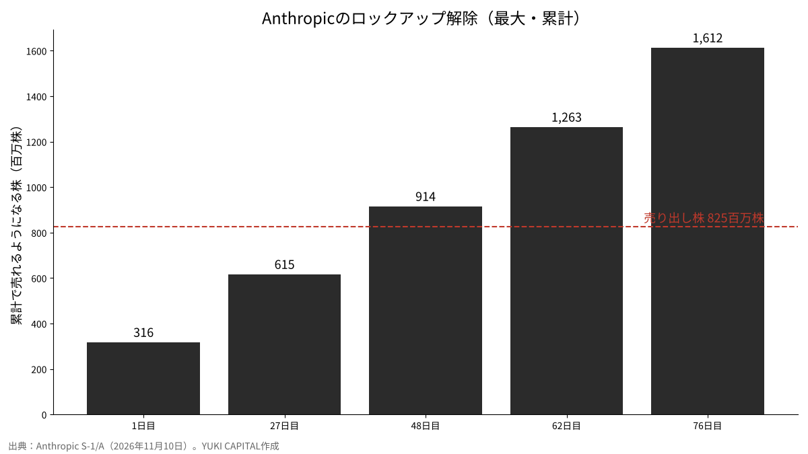
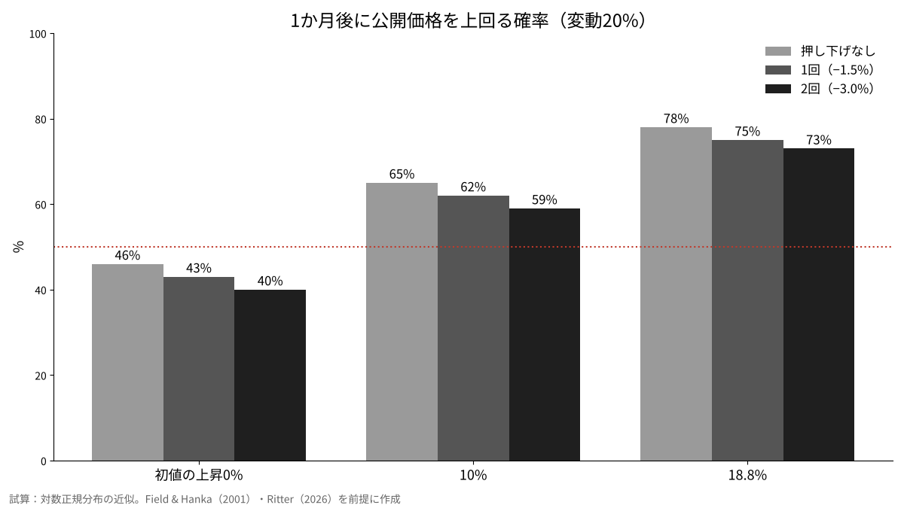

Anthropicの上場から76日で最大16億株――S-1/Aのロックアップ表とField・Hankaの研究で、1か月後に公開価格を上回る確率を試算する
Anthropicは11月19日にナスダックへ上場する予定で、仮条件は1株70〜78ドル、売り出す株は8億2,500万株である。
上場の日に注目が集まるのは初値だが、株価を長く動かすのは、その後に市場へ出てくる株の量である。
本稿の問いは、ロックアップ（売却の制限）が段階的に外れるとき、上場から1か月後に株価が公開価格を上回っている確率はどの程度か、である。
- S-1/A（11月10日）によれば、上場初日から最大3億1,600万株、76日目までに累計で最大16億1,200万株が売れるようになる。最初の1か月だけで、売り出し株の約75%にあたる。
- 過去の研究では、ロックアップが外れる前後3日間の株価は平均で約1.5%下がる。押し下げを1か月に2回分（−3%）置くと、1か月後に公開価格を上回る確率は、初値の上昇がゼロなら約40%、上昇が10%なら約59%と試算できる。
- 結果を最も大きく動かすのは初値の上昇幅で、変動の大きさと押し下げの回数の影響はそれより小さい。試算は前提を置いた目安であり、予想ではない。

問いと背景
ロックアップとは、上場前からの株主や役員が、上場後の一定期間は株を売らないと約束する取り決めのことである。米国の証券取引委員会（SEC）は、その期間を「多くは180日」と説明している[5]。
Anthropicの取り決めは、180日で一度に外れる形ではない。11月10日に出た目論見書の訂正版（S-1/A）は、上場初日、27日目、48日目、62日目、76日目と、段階ごとに売れるようになる株数を示している[1]。多くの株主の制限は180日で、共同創業者などは365日まで続く[1]。上場の日に買う人にとっては、この日程表が、いつ売り手が増えうるかを示す唯一の公式な資料になる。
規模も確かめておく。売り出し株8億2,500万株に仮条件の70〜78ドルを掛けると、調達額は約578億〜644億ドルになる。上場と同時に、別に約260億ドル分の株を特定の投資家へ割り当てる計画もある[1]。上場後の発行済みの株は約130億8,700万株で、市場で自由に売り買いできる株は、最初はその6%余りにすぎない[1]。
公開価格とは、上場の前に決まり、申し込んだ投資家が株を受け取る値段のことである。初値とは、上場の日に市場で最初についた値段、または初日の終値を指す。本稿では初日の終値を使う。
データと方法
使う資料は5つである。(1)AnthropicのS-1/A（2026年11月10日）の「将来売却できる株式」の表[1]、(2)ロックアップの解除と株価を調べたFieldとHankaの論文（2001年）[2]、(3)同じ主題のOfekとRichardsonの研究（2000年）[3]、(4)米国の上場の統計をまとめたJay Ritter教授の資料[4]、(5)SECの投資家向けの解説[5]である。
方法は3段で進める。まず、S-1/Aの表から、段階ごとに売れるようになる株数を累計し、売り出し株と比べる。次に、論文が示す「解除の前後に株価が下がる幅」を、最初の1か月に重なる解除の回数だけ株価の押し下げとして置く。
最後に、1か月後の株価が公開価格を上回る確率を計算する。1か月は、取引日でおよそ21日とする。1か月の値動きを対数正規分布で近似し、確率は「初値の上昇幅＋押し下げ−変動の半分の2乗」を変動の大きさで割った値を、標準正規分布に当てはめて求める。ここで「変動の大きさ」とは、1か月の値動きの標準偏差のことで、上場したばかりの大型のテクノロジー株の例から15〜25%の幅で動かす。
平均の伸び（ドリフト）は、押し下げの分を除いてゼロと置く。1か月という短い期間では、会社の成長や市場全体の上昇より、需給と初値の勢いのほうが値段を大きく動かすと考えるためである。
結果
S-1/Aの表を累計すると、次のようになる[1]。数字はいずれも「最大」で、すべてが売られるとは限らない。
| 上場からの日数 | その段階で売れるようになる株数 | 累計 | 売り出し株8億2,500万株に対する割合 |
|---|---|---|---|
| 1日目 | 3億1,600万株 | 3億1,600万株 | 38% |
| 27日目 | 2億9,900万株 | 6億1,500万株 | 75% |
| 48日目 | 2億9,900万株 | 9億1,400万株 | 111% |
| 62日目 | 3億4,900万株 | 12億6,300万株 | 153% |
| 76日目 | 3億4,900万株 | 16億1,200万株 | 195% |

上場から1か月の間に重なる段階は、初日と27日目の2回である。さらに、同時に割り当てられる3億5,135万株余りの株は、ロックアップの対象になっていない[1]。上場の直後から、売り出し株だけを見ていると見誤るほどの株が動きうる。
発行済みの株に対する割合で見ると、市場で売れる株は、上場時の約6.3%から、初日の解除で約8.7%、76日目には約18.6%まで増える計算になる。数字は小さく見えるが、毎日の売買の量と比べれば、需給を変えるには十分な大きさである。
FieldとHankaは、1988年から1997年の1,948件を調べ、ロックアップが外れる前後3日間の株価が平均で1.5%下がり、売買の量はその後も40%増えたままになると報告した[2]。OfekとRichardsonは、1996年から1998年の1,056件で、解除までの5日間に2.03%下がったとしている[3]。ここから、解除1回につき1.5%の押し下げを置く。
48日目には、売れるようになる株の累計が売り出し株を上回る。上場から2か月に満たないうちに、最初に市場へ出た株より多い株が、売り手の側に加わりうるということである。
感度分析
前提を3つ動かした。初値の上昇幅（0%、10%、18.8%）、1か月の変動の大きさ（15%、20%、25%）、押し下げの回数（0回、1回、2回）である。18.8%は、Ritter教授がまとめた1980年以降の米国の上場の初日の平均の上昇率である[4]。
| 押し下げ | 変動の大きさ | 初値の上昇0% | 初値の上昇10% | 初値の上昇18.8% |
|---|---|---|---|---|
| なし | 20% | 46% | 65% | 78% |
| 1.5%（1回） | 20% | 43% | 62% | 75% |
| 3.0%（2回） | 15% | 39% | 64% | 81% |
| 3.0%（2回） | 20% | 40% | 59% | 73% |
| 3.0%（2回） | 25% | 40% | 55% | 67% |

表から読めることは2つある。初値の上昇がゼロなら、どの前提でも確率は5割を下回る。押し下げを2回置いても、確率の差は数ポイントにとどまり、初値の上昇幅の差（同じ変動で30ポイント以上）よりずっと小さい。
考察
反対の見方もある。Anthropicの株主の多くは長く持つつもりの大きな機関で、解除されても売らないかもしれない。また、解除の日程は前もって公表されており、効率的な市場なら、その分はすでに値段に入っているはずだという考え方もある[3]。
一方で、FieldとHankaは、ベンチャーキャピタルが出資した会社ほど解除時の下げが大きいことも示している[2]。Anthropicは大型の資金を多く集めてきた会社で、この点は押し下げを強める側に働く可能性がある。
もう1つの見方として、段階を細かく分けたこと自体が、押し下げを和らげる工夫だとも読める。一度に16億株が出るのと、2〜3週間おきに3億株ずつ出るのとでは、買い手が吸収できる量が違う。この点で、論文の平均の1.5%は、Anthropicには大きすぎる前提かもしれない。
同じ年に上場したSpaceXも、ロックアップを9つの段階に分けたと報じられている。大型の上場が続く中で、段階的に外す形は今後の標準になりつつあるのかもしれない。
限界も書いておく。論文の対象は1988年から1998年の上場で、規模も時代も今回とは違う。1か月の値動きを対数正規分布で近似する方法は、大きな下げや上げが続けて起きる局面を小さく見積もる。答え合わせの基準は、12月19日前後（上場から約1か月）の終値が公開価格を上回っているかどうかである。
結論
ロックアップの表を見る限り、上場から76日で最大16億1,200万株、売り出し株の約2倍が売れるようになる。最初の1か月だけでも、売り出し株の約75%にあたる。
試算では、1か月後に公開価格を上回る確率は、初値の上昇幅が決める部分が大きい。上昇がゼロなら4割前後、上昇が1〜2割なら6〜8割である。解除による押し下げは確率を数ポイント下げるが、主役ではない。
長い目で見れば、180日目と365日目の解除のほうが量は大きい。1か月後の確率よりも、その日に向けて買い手がどれだけ育っているかが、株価の行方を決めると考えられる。
僕はこう見ている
僕はAnthropicの株を上場の後に約1,000万円買い、10年、20年と持つつもりでいる。上場の日は電話をせず、様子を見る。
1か月後については、上がると思っている。それでも、来年のどこかで公開価格を割る局面は出てくるはずだ。ロックアップの解除が続く間に株価が下がったら、そこで買い増す。この表は、その日がいつ来やすいかを教えてくれる地図だと思っている。
出典
- Anthropic, PBC「Form S-1/A（Amendment No.2）Shares Eligible for Future Sale」SEC EDGAR、2026年11月10日 https://www.sec.gov/cgi-bin/browse-edgar?company=anthropic&type=S-1
- Laura Casares Field, Gordon Hanka「The Expiration of IPO Share Lockups」Journal of Finance 56(2)、2001年 https://ideas.repec.org/a/bla/jfinan/v56y2001i2p471-500.html
- Eli Ofek, Matthew Richardson「The IPO Lock-Up Period: Implications for Market Efficiency and Downward Sloping Demand Curves」NYU Stern、2000年（Cochraneの整理による） https://www.johnhcochrane.com/s/internet-and-demand-curves.pdf
- Jay R. Ritter「Initial Public Offerings: Sales Statistics Through 2025」フロリダ大学、2026年1月1日 https://site.warrington.ufl.edu/ritter/files/IPOs-Sales.pdf
- U.S. Securities and Exchange Commission「Lock-up agreement」（Investor.gov の用語集） https://www.investor.gov/introduction-investing/investing-basics/glossary/lock-up-agreement
- FourWeekMBA「Up to 1.6B Anthropic Shares Unlock Within 76 Days of IPO」（S-1/A の表の整理）、2026年11月 https://fourweekmba.com/ai-up-to-1-6b-anthropic-shares-unlock-within-76-days-of-ipo/
- Motley Fool「Anthropic set its IPO price range at $70 to $78」2026年11月13日 https://www.fool.com/investing/2026/11/13/anthropic-set-its-ipo-price-range-at-70-to-78-valuing-it-at-up-to-1405-trillion/
- Webull「What SpaceX's Lockup Expiry Could Mean for Anthropic's IPO Strategy」2026年11月 https://www.webull.com/news/15581005814711296
写真：Maxim Hopman（Unsplash）。図はYUKI CAPITALが作成
日々の数字と判断は、Xで記録している。